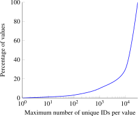
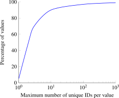

4.1.2 Definitions and system design
In this section, we introduce definitions used throughout this section, present the scalability requirements of our system, recall some useful building blocks from cardinality estimation, and finally present our KHyperLogLog (KHLL) algorithm.
Definitions
In this section, we define how we quantify reidentifiability and joinability. These metrics are defined on individual columns and can be directly extended to any combinations of columns.
Recall that our main goal is to design an efficient approach for quantifying the reidentifiability and joinability risks of large datasets. Specifically, it should help mitigate the risk of mistakes by engineers (e.g., adding additional columns to datasets without realizing they are overly unique or pose joinability risks) particularly as complex production systems evolve. We assume that the users of our system want to measure the privacy risks of their datasets, and so we do not defend against malicious users attempting to misuse our algorithm to under-report the risks of their data.
Reidentifiability via uniqueness distribution
We consider datasets as a sequence of rows, where each row is a combination between a user identifier (or user ID) and multiple columns , , We typically only consider a single column at a time: we index all possible user IDs and values of this column , and we associate a dataset with the set of pairs present in . Furthermore, for a specific value , we denote by the set of user IDs associated with this value in . These notations, and the others introduced throughout this section, are summarized on page 38.
Definition 75. The uniqueness of a column value with respect to is given by the number of unique IDs associated with i.e., .
Definition 76. The uniqueness distribution of with respect to is estimated by the histogram of the uniqueness of individual values in in dataset .
This definition is slightly different from -anonymity (see Section 2.1.1). We saw that -anonymity counts the minimum number of unique individuals (here, IDs) associated with any value in . Here, we keep the entire distribution of values: this way, we can compute the fraction of values in with high reidentifiability risk, and thus the potential impact to the data when one would like to protect the data with -anonymity or its variants.
In practice, the uniqueness distribution can be skewed. A few values in might appear with high frequency while other values may pose high reidentifiability risks as they associate with only a small number of user IDs.
As an example, imagine a log that contains the User Agent (UA) of users who visit a site. UA is an HTTP header column which describes the application type, operating system, software vendor and software version of an HTTP request. To gauge the reidentifiability of UAs, one can estimate the uniqueness distribution by counting the number of unique IDs that individual UA strings associate with. We expect a high percentage of raw UA strings to be associated with only one or a few user IDs and thus reidentifying [135].
Let and represent the sets of values of two columns in datasets and respectively. Let denote the number of unique values in , i.e., the cardinality of , and denote the set of values in both and (the intersection). We measure the joinability of and through and using the containment metric.
Definition 77. The containment of in is the ratio between the number of unique values of the intersection of and , and the number of unique values in i.e., .
Note that containment is similar to the Jaccard index [205], but it is asymmetric. Unlike the Jaccard index which computes the ratio between the number of unique values in the intersection of and , and the union of and , containment uses the number of unique values in either or as the denominator. This difference is important when and differ in size. Indeed, imagine one dataset that contains a small subset of the users from a larger dataset. The Jaccard index will always be small, and would not report joinability risk even when all values of are contained in .
Scalability requirements
While both uniqueness distribution and containment are easy to compute on small datasets, the computation will need to scale to handle very large datasets. In addition to hosting user content for digital services, organizations collect data for providing physical services (e.g., healthcare and location-based services), improving user experience and service availability, and anti-spam and fraud detection purposes. The scale of data can be huge, both in terms of the number of data columns and rows, and the number of databases.
It would be a Herculean task for human reviewers to manually oversee all product iterations and changes to data strategies. In a similar fashion, individual well-intentioned groups of engineers also find it hard to keep up with the increasingly large number of policy and regulatory requirements.
An ideal system for measuring reidentifiability and joinability that is scalable will need to use efficient and parallelizable algorithms. Also, as increasingly heterogeneous data is collected and used it will need an approach agnostic to data types and formats to handle datasets generated by different engineering teams.
Cardinality estimation basics
In this section, we re-introduce two cardinality estimation techniques mentioned in Section 3.3. Recall that cardinality estimation is a technique to efficiently approximate the number of distinct elements in a multiset [45, 152, 195], typically using a small amount of memory. These algorithms use compact data structures, colloquially known as “sketches”, which can summarize certain observable properties of the elements in the analyzed dataset. Sketching algorithms have also been proposed to compute other statistics such as quantiles [214, 268] and frequent values [65, 84, 281].
In addition to being memory efficient, cardinality estimation sketches support additional operations such as merging (set union). Large-scale datasets are typically stored in multiple machines (“shards”), as the entire dataset would not fit in a single machine. In such situations, one can compute the cardinality of the entire dataset using a two-step approach: compute the sketches of individual data shards, then merge all the sketches generated in step 1.
In this section, we extend two cardinality estimation algorithms named -Minimum-Values (KMV) [45] and HyperLogLog (HLL) [152] to build KHLL.
As implied by the name, KMV estimates the cardinality of a set by keeping the smallest hash values of its elements. The intuition behind KMV is as follows. Suppose there exists a hash function that uniformly maps input values to its hash space. Note that this hash function does not need to be a cryptographic hash function, and one-wayness is not required (i.e., it does not matter if the hash function can be reversed in polynomial time). If one computes the hash of each element in the analyzed dataset, one can expect those hashes to be evenly distributed across the hash space. Then, one can estimate the cardinality of the analyzed dataset by computing the density of the hashes (i.e., the average distance between any two consecutive hashes) and dividing the hash space by the density. Since storing all the hashes can incur a significant storage cost, one can store only the smallest hash values and extrapolate the density of the entire hash space.
As a concrete example, say there is a hash function whose outputs are evenly distributed in the range . If , and the th smallest hash value is 1000, we can compute the density by simply dividing the th smallest hash value by , i.e., . Extrapolating to the range of , with the uniformity assumption but without bias correction, one can roughly estimate the number of unique values as .
Computing set union using KMV sketches is straightforward. Given two KMV sketches, and , one can find the KMV sketch of the union of the two datasets by combining the two sketches and retaining only the smallest hashes.
KMV sketches are efficient to produce. It requires a single pass over the dataset, but only a space complexity of , as it consists of unique hash values of fixed length. The cardinality estimated by a KMV sketch has a relative standard error of with the assumption that the hash space is large enough to keep hash collisions to a minimum. As a concrete example, with and using a 64-bit uniformly distributed hashing function, one can estimate the cardinality with a relative standard error of 3% and KMV sketch size of 8 KB.
Instead of keeping the smallest hash values, HLL further reduces the space requirement by tracking the maximum number of trailing zeros of the hash values. The maximum number of trailing zeros increases as more unique values are added to HLL given the uniformity assumption of the hash function.
From the hash of an incoming value, HLL uses the first bits to determine the bucket number, and uses the remaining bits to count the number of trailing zeros. HLL keeps track of the maximum number of trailing zeros at each of the buckets. After processing all values in the analyzed dataset, HLL estimates the cardinality of each bucket as , where is the maximum number of trailing zeros seen in bucket . Finally, HLL estimates the cardinality of the analyzed dataset by combining the cardinalities of individual buckets by taking the harmonic mean.
HLL sketches are also efficient to compute (i.e., using a single pass over the analyzed dataset) and provide cardinality estimates with a relative standard error of . Moreover, the space complexity of a HLL sketch is since it consists of counts of trailing zeros. As a concrete example, with M=1024 and using a 64-bit uniformly distributed hashing function, one can estimate the cardinality with a relative standard error of 3% and HLL sketch size of 768 B.
Heule et al. showed that HLL does not provide a good estimate for low cardinalities and proposed HLL++ [195] to accommodate such datasets. HLL++ maintains two different modes of sketches. When the cardinality is low, it remains in the sparse representation mode, which keeps almost the entire hash values. When the list of hash values kept grows, HLL++ switches to the conventional HLL mode which has a fixed memory footprint. The sparse representation allows HLL++ to use linear counting for estimating small cardinalities with negligible error while also keeping the sketch size small.
KHyperLogLog (KHLL)
While cardinality estimators are helpful, they are limited in many ways for reidentifiability and joinability analysis. While cardinality estimates can be used to estimate the average uniqueness when the total unique IDs in the dataset is known, they do not estimate the uniqueness distribution. The average alone can be misleading: the uniqueness distribution can be skewed in practice. The uniqueness distribution is also useful to inform about various data strategies, for example the feasibility of suppressing or generalizing a fraction of the unique values. The distribution could not be naively estimated as we could not assume the datasets to be structured in a way that every single row corresponds to a single user.
In this section, we present KHyperLogLog (KHLL), which builds on KMV and HLL to estimate uniqueness distribution and containment with a single pass over the dataset and low memory requirements. The core insight is to use a two-level data structure for analyzing tuples of column and ID values. KHLL contains HLL sketches corresponding to smallest hashes of column values. This is approximately equivalent to taking a uniform random sampling of size over the column values. Each hash of column value comes with a corresponding HLL sketch, containing the hashes of IDs associated with the corresponding column value.
Consider a stream of pairs and a hash function . KHLL processes the incoming tuples as follows:
- 1.
- Calculate and .
- 2.
- If is already present in the KHLL sketch, add to the corresponding HLL sketch.
- 3.
- Else, if is
among the
smallest hashes:
- a)
- If there are more than entries, purge the entry containing the largest hash of .
- b)
- Add a new entry containing and a HLL sketch with .
- 4.
- Else, do nothing.
As a specific example, consider a stream of User Agent (UA) and ID value pairs. Further, consider an 8-bit hash function and a KHLL sketch of and . The KHLL sketch contains at most 3 entries representing the 3 smallest values of in the first level, each with a HLL sketch in the second level which has at most 8 counting buckets. For example, when the KHLL sketch processes the tuple (UA-4, ID-6) which hashes to (00000011, 00011010) as shown in Figure 4.1, the entry with with the largest and its companion HLL sketch is purged to give way to and a new HLL.
The memory signature of a KHLL sketch depends on the parameters and as well as the uniqueness distribution of the data. Similarly to HLL++ [195], we design the HLL sketches in KHLL to start in the sparse representation mode which keeps a sparse list of the ID hash values. Once this representation exceeds the fixed size of a conventional HLL, it is converted to a normal representation with counting buckets. Using a 64-bit hash function, individual counting buckets require less than a byte to count the maximum number of trailing zeros in the ID hash values.
Recall that is the set of user IDs associated with a given column value in dataset . The memory needed for a KHLL sketch considering both the sparse and conventional mode is thus in bytes. Since the KMV approximates a size uniform random sample over column values, the expected memory usage for the entire KHLL will be roughly times the average HLL size i.e., .
This means that the memory usage of KHLL, while never above a strict upper bound, will be higher for datasets with low uniqueness in which most column values are associated with large user ID sets. Alternatively, when most column values correspond to only a few unique user IDs, the memory signature will be much smaller as the HLL sketches will be in sparse representations.
|  |
|  |
Note that KHLL does not dictate how the data is structured. To process a table of data, we simply read each row in the table, extract the ID value and the values of columns (or combinations of columns) of interest, and ingest the tuples of ID and column values into the corresponding KHLL sketches. This allows for tables that contain arbitrarily large number of columns, and even for tables where data about the same user can be repeated across multiple table rows.
During the design and implementation of KHLL, we considered an alternative two-level KMV-based data structure. The high level idea is to store a KMV sketch of values, like KHLL, but to also use KMV in the second level instead of HLL. We named this K2MV given the two-level data structure of minimum hash values. To improve the performance, we implemented this as a single table storing all hash values instead of in multiple KMV stores. The size of the table is governed by parameters , , corresponding to the number of hashes stored at each level. We used an amortized strategy, where hash values are stored in sorted order, and where new hash values are written to a buffer which is periodically merged into the sorted list. We ran experiments and concluded that KHLL was more memory-efficient and suitable for our needs.